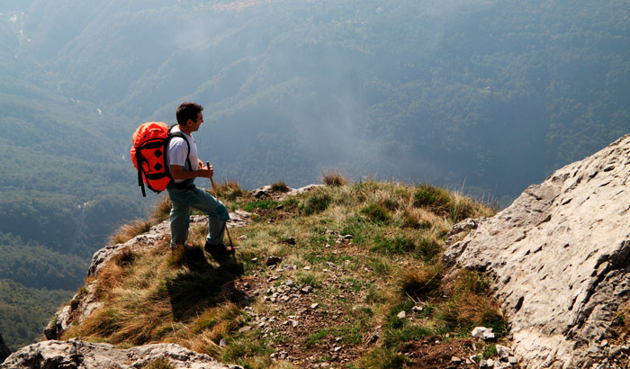

Sandakphu to Phalut (3600 m): This is the most pristine stretch of the trek, offering great views of Kangchenjunga and Mt. Everest. It is a one-day trek via Sabarkum (3536 m) covering 21 km. But the main problem of this Sandakphu-Phalut route is that there is no water source in between, so trekkers have to carry enough water to reach Phalut. Since 2009. water and food have been made available at Sabarkum. However, this is a remote place and chances are that one will not find anyone here, let alone water and food during the rainy season and winter. It is advisable to carry one's own water. In case the trekker is unable to proceed further towards Phalut from Sabarkum, one can turn right towards Moley (3 km) trekkers hut where food is available. Trekkers planning to return from Sabarkum or Moley can take the route directly to Sirikhola or Gorkhe.
Do not attempt this route without your porter or guide as it is not marked like the route to Sandakphu.

Next>>